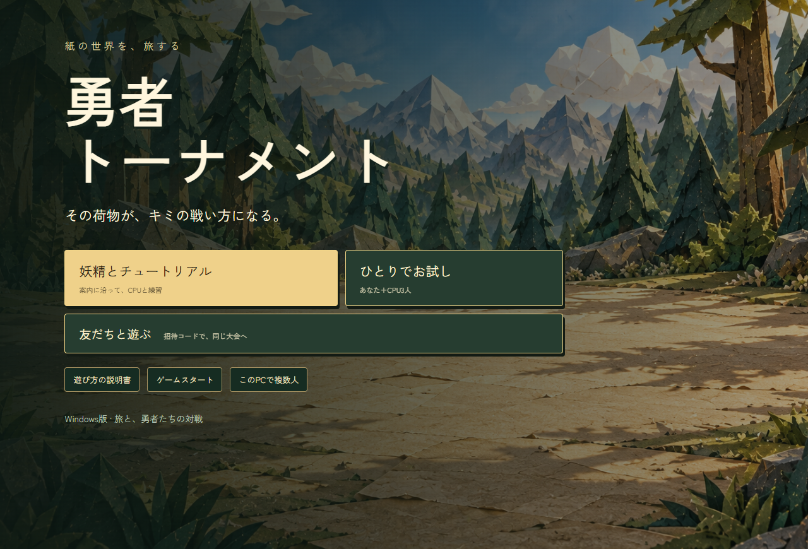
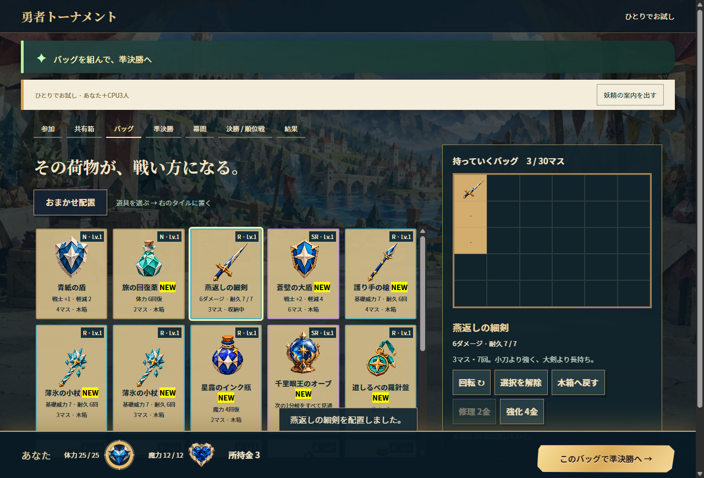
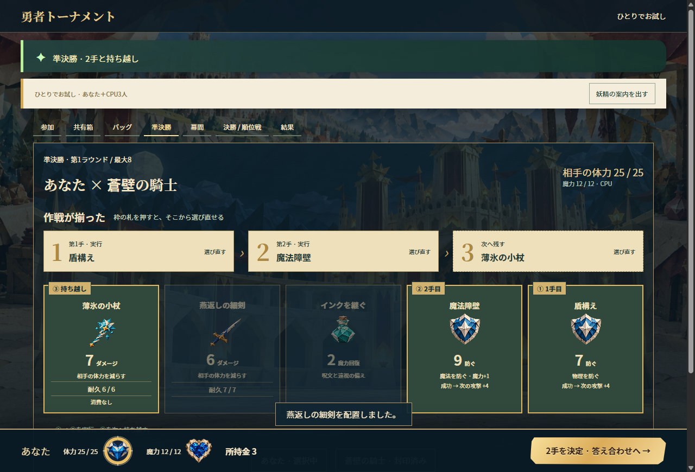
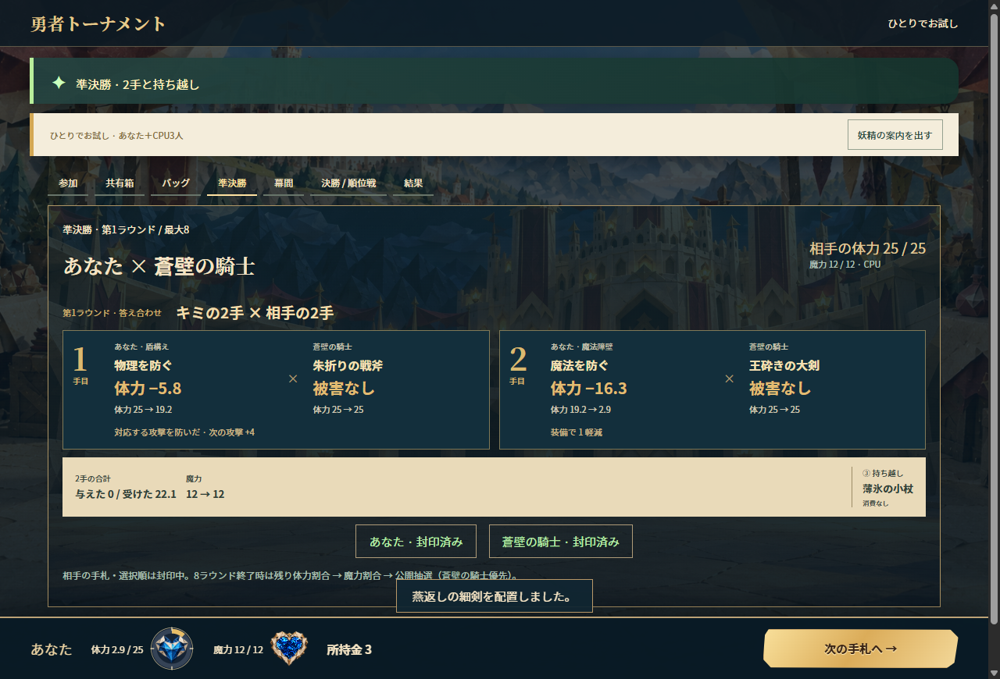
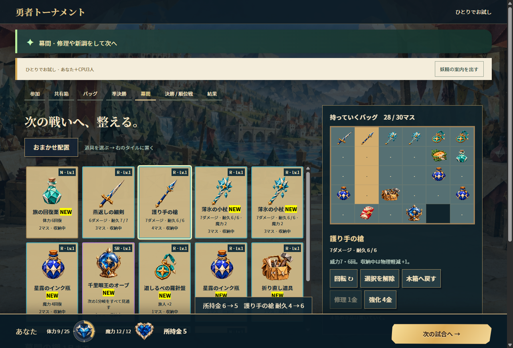
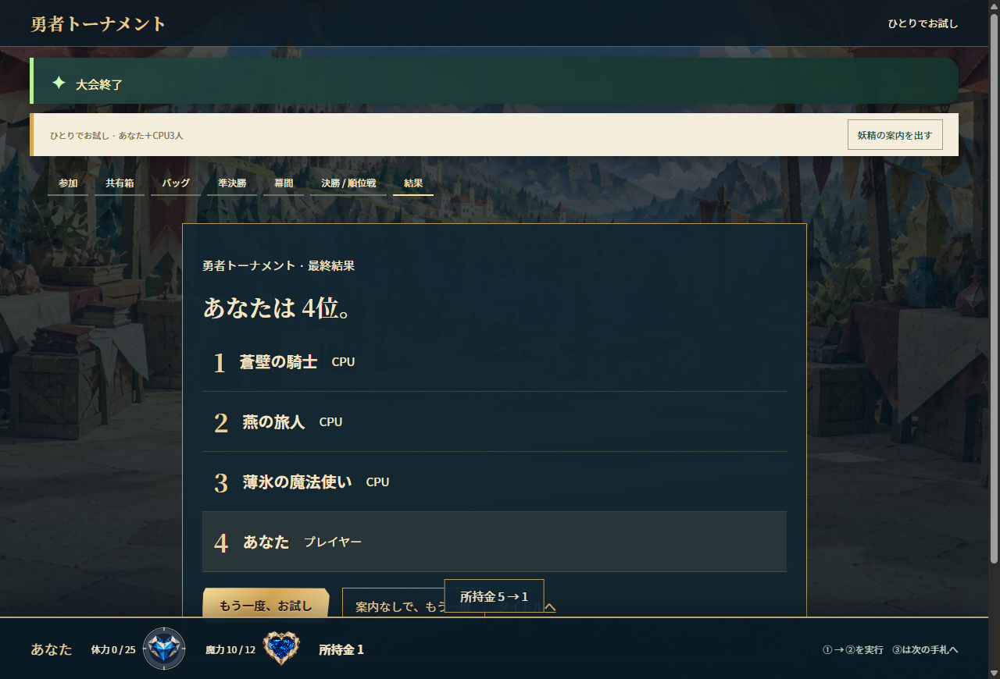
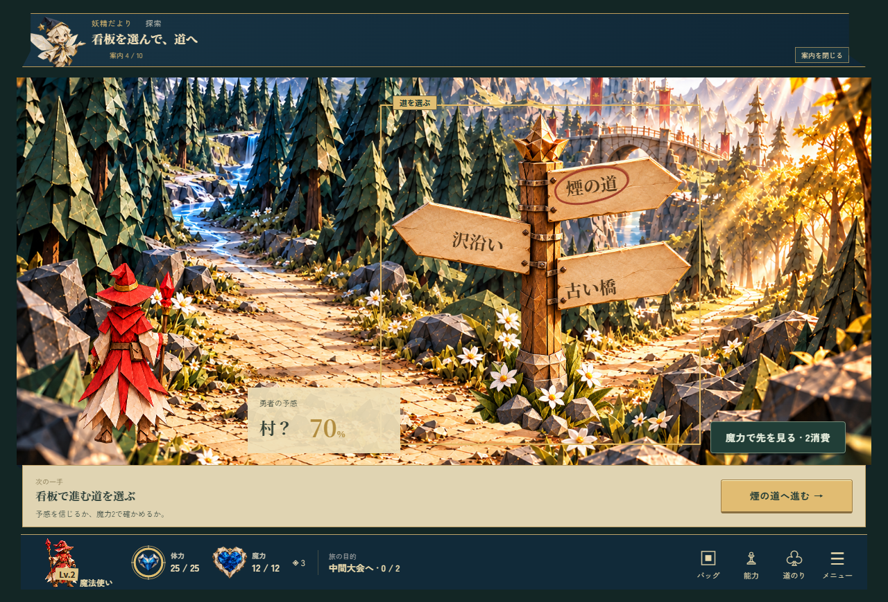
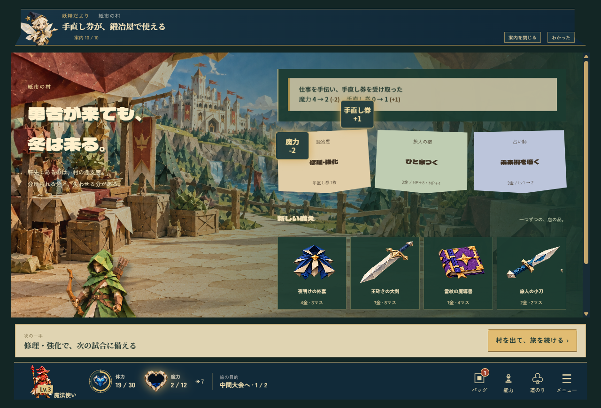
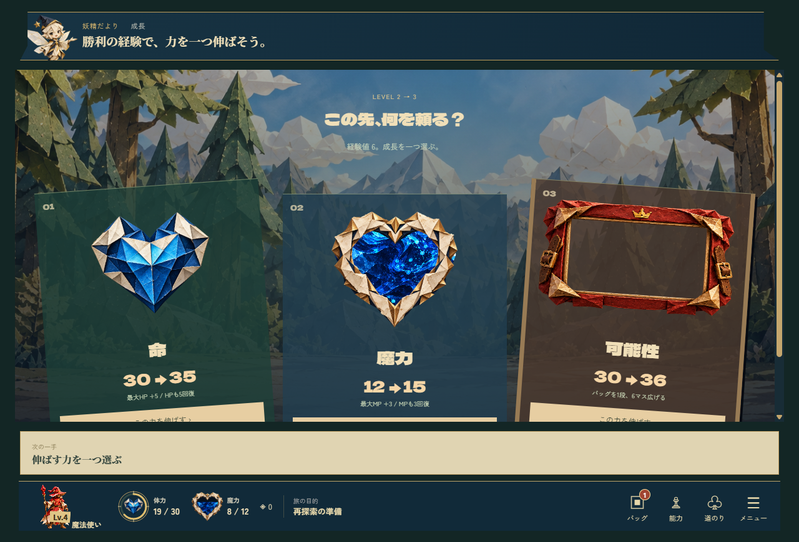

タイトル
開く。選ぶ。
説明書を読んだら、まずはCPUと練習。

押すところ「妖精とチュートリアル」か「ひとりでお試し」。
変わること本編の旅や荷物とは別の、練習大会。
バッグ
その荷物が、戦い方になる。
武器や道具を選び、バッグのタイルに置く。

押すところ道具 → タイル。回転できる。迷ったら「おまかせ配置」。
変わること入れた装備が、カードと守りになる。木箱の品は置いていく。
カード選択
2手と、1枚の未来。
3枚を順番に選ぶ。①と②を使い、③は残す。

押すところ① 最初の手 ② 次の手 ③ 次のターンへ持ち越し
変わること魔力・耐久を使うのは①と②だけ。守る種類と順番も作戦。
答え合わせ
答え合わせを、見届ける。
2手の結果と、自分の資源の変化を見る。

押すところ体力・魔力・耐久の変化を見て、次へ。
変わること体力0で敗北。残した③は、次の手札へ。
幕間
次の試合へ、整える。
傷んだ武器を直し、持ち物を組み直す。

押すところ武器を選ぶ → 修理・強化。棚で買った品もバッグへ。
変わること修理は耐久、強化は威力。所持金が減る。
大会結果
最後まで、自分の荷物で。
準決勝のあと、決勝か順位戦へ。

押すところ幕間の「次の試合へ →」。終わったら、もう一度。
変わること勝っても負けても、順位まで見届けられる。
旅モード
旅に出たら、三つ辻へ。
「ゲームスタート」は、道を選んで進む旅モード。

押すところ看板を選び、その道へ進む。
変わること勇者の予感の％は、行き先の見立て。確定ではない。
旅モード
村では、変化を見よう。
次の戦いに備えて、選択する。

押すところ並んだ選択肢を選び、結果を見る。
変わること体力・魔力・所持金の差分が、選んだ結果。
旅モード
勝ち取った成長を、荷物に。
勝利のあと、伸ばす強さを選ぶ。

押すところ成長の候補を選んで確定。
変わること装備と成長の組み合わせで、戦い方が変わる。